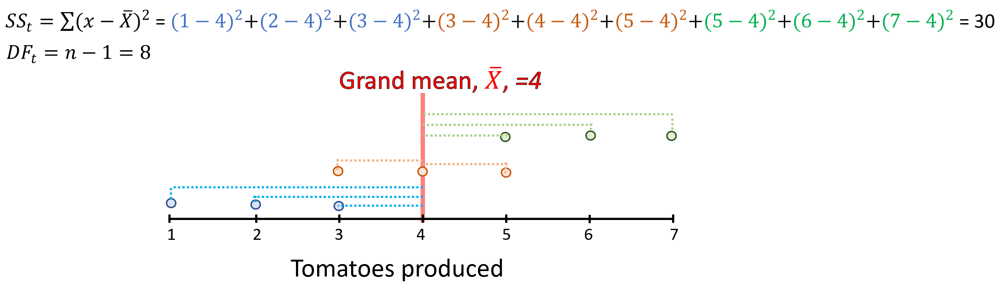
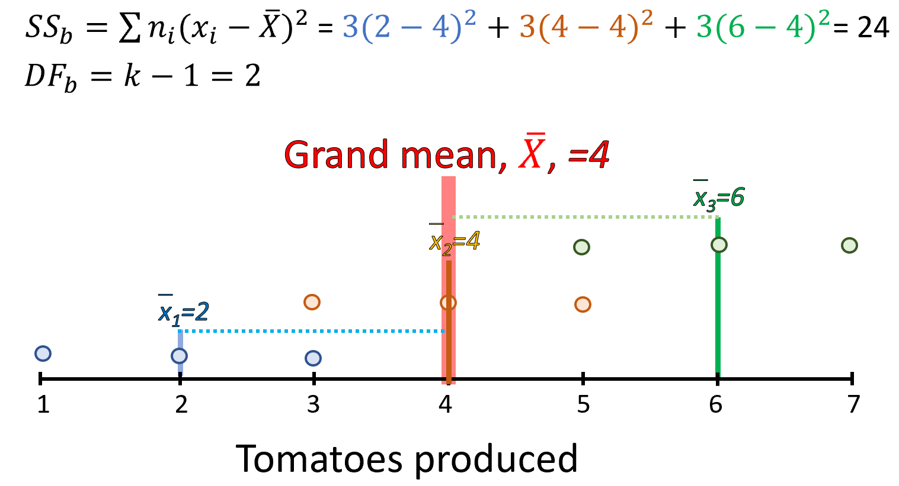
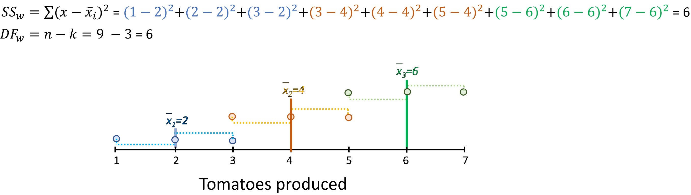
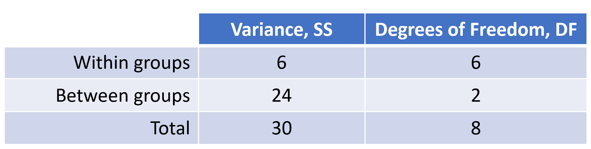
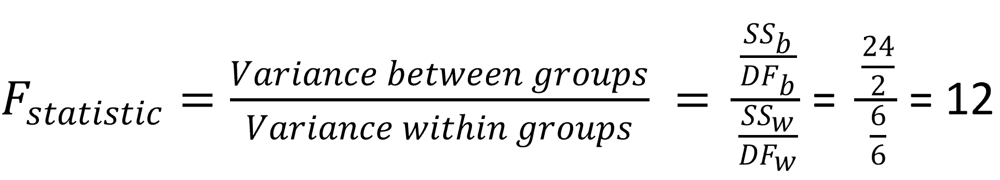
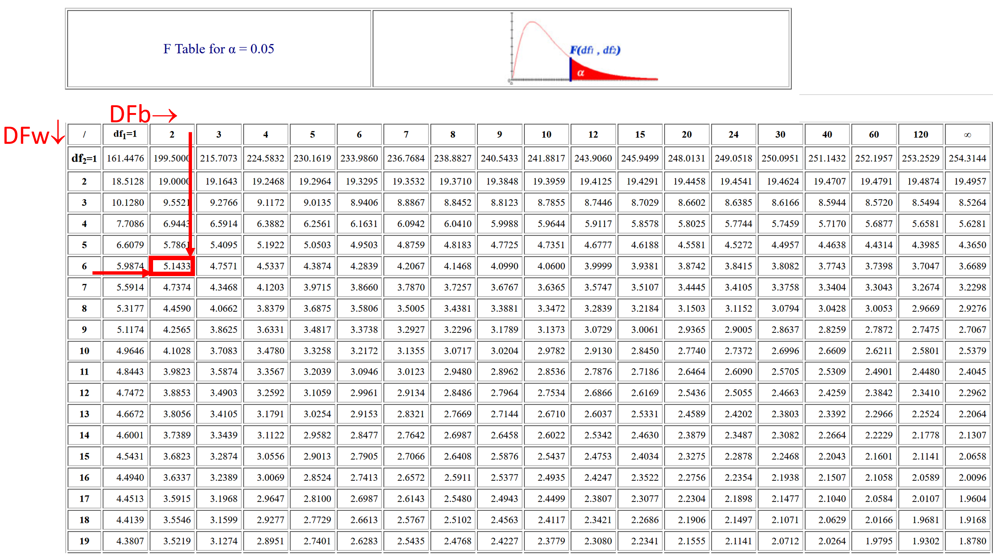
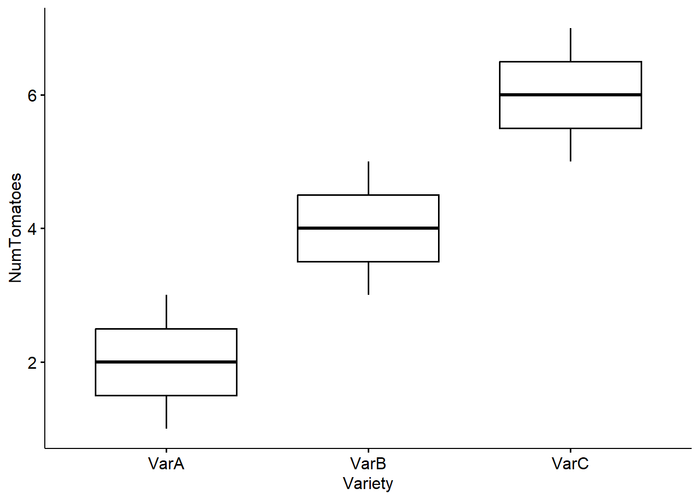

ANOVA by hand
Lets run an ANOVA by hand.
Say a farmer is interested in finding out if there are differences between three available varieties of tomatoes. These were the numbers of tomatoes by the three varieties:
Variety A = 3, 2, 1
Variety B = 5, 3, 4
Variety C = 5, 6, 7
Stating Hyphotheses
We start by stating the hypotheses
Ho: Mean Variety A = Mean Variety B = Mean Variety C
Ha: Mean Variety A \(\neq\) Mean Variety B \(\neq\) Mean Variety C
Lets test these hypotheses using a level of significance, \(\alpha\), of 0.05.
Total variance
Next we calculate the total variance:

Figure 12.8: Total variance and degrees of freedom, DF
Between group variance
Next we calculate the variance between groups. In other words, how each group mean differs from the grand mean:

Figure 12.9: Between group variance and degrees of freedom, DF
Within group variance
Next we calculate the within group variance. Basically, how each observation differs from the group mean.

Figure 12.10: Within group variance and degrees of freedom, DF
Variance partitioning
As indicated earlier, the within and between group variance and degrees of freedom should add up to the total variance and total degrees of freedom. Lets check this by putting the results above together:

Figure 12.11: Within and between group Sums of Aquares and degrees of freedom, DF
F-Statistics
The F-statistics is simply the ratio of the between group to the within group variance.

Figure 12.12: F-Statistic
So, our F-statistic is 12. The fact that is larger than one provides good hints that this could be significant. But we still need to find out for the given degrees of freedoms, number of groups and level of significance (\(\alpha\)), what is the critical F-Value.
If our calculated F-value is larger, we reject the null hypothesis and conclude that indeed there are significant differences…same drill as we have done before.
Critical F-value
The last step in the ANOVA is to find out the critical F-Value, which we get from a F-table for the given \(\alpha\). These tables are available on most statistics books or online (Example HERE. )
You need to select the specific table for the given (\(\alpha\)), the columns will represent the between degrees of freedom, and the rows the within group degrees of freedom. In our case, the between degrees of freedom is 2, and our within group degrees of freedoms is 6.

Figure 12.13: Within group variance and degrees of freedom, DF
At the interception of column DF=2 and row DF= 6, is the cell 5.1433, which is our critical F-statistics.
Just to remember, our calculated F-statistics was 12, which is much larger than the critical F-statistics at \(\alpha\) 0.05, which is 5.1433.
Thus, we reject the null hypothesis and conclude that indeed there are significant differences in the amount of tomatoes produced by the three varieties at a level of significance of 0.05.
Ploting the data
As it is always the case, we should visualize the data. In this case, a box plot could be an effective visualization tool.
library(tidyverse)
library(ggpubr)
library(rstatix) # we load this libraries, which we use to sumamrise the results
#We start by putting the data in a dataframe, which two columns. one for the variety type, and the other for the number of tomatoes
Data=data.frame(Variety=c(rep("VarA",3),rep("VarB",3),rep("VarC",3)), NumTomatoes=c(1,2,3, 3,4,5, 5,6,7))
ggboxplot(Data, x = "Variety", y = "NumTomatoes")
Boxplots allow you to visualize the mean and the standard deviations of each group. From the plot above, you can see clearly that not only the mean tomato production of the three varieties are different, but their variances do not overlap.